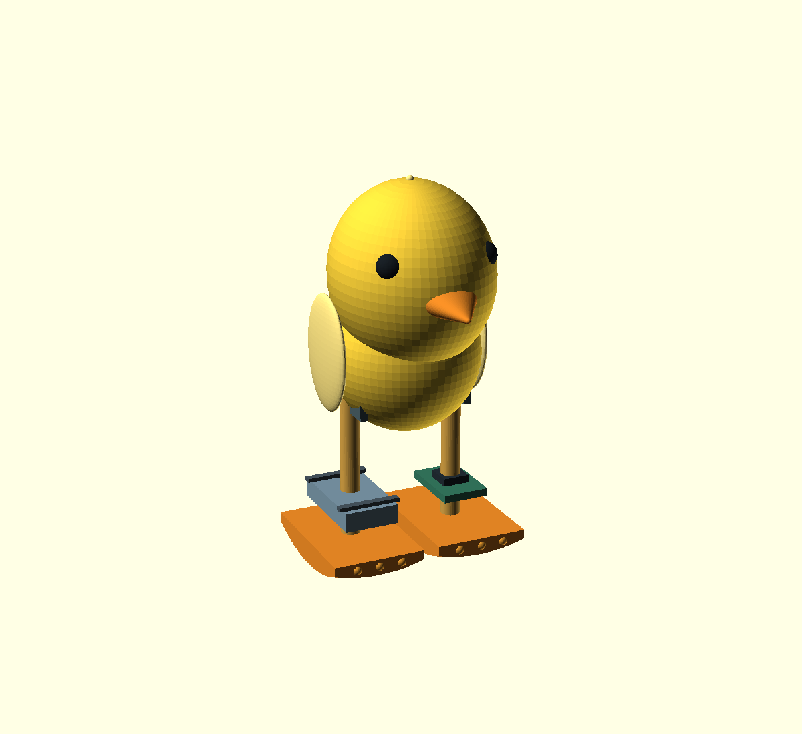

Goal: inexpensive brushed DC actuation, two real walking feet, a lightweight yellow chick body, and easy-to-print parts. Initial surface: a smooth, level desktop.

Start by testing one compact N20-style brushed DC gearmotor at the hip, with shaped rocking soles and alternating left/right leg motion. An H-bridge reverses the motor; gait timing and travel stops must be developed with the actual motor. This is a proposed passive-dynamic waddling mechanism, not a servo-controlled humanoid. A rotary crank linkage is a fallback if the direct rocking hip proves too sensitive.
Small single-motor bipeds have been demonstrated in research. Zippy uses a DC motor and curved feet, but it is a different, much smaller robot. Scaling it up and adding a chick shell does not inherit its proven gait. The head, battery position, foot curvature, friction and hip geometry must be evaluated together.
| Item | Initial target |
|---|---|
| Height | Approximately 100 mm |
| Overall foot span | Approximately 52 mm; rounded sole envelopes 36 × 24 mm each |
| Hip height / spherical sole radius | 50 mm / 45 mm, provisional |
| Total mass | Aim below 80 g; mass budget must be measured and screened |
| Motor | One compact geared DC motor; exact voltage, ratio, current and torque not yet selected |
| Cosmetics | Removable 0.8 mm nominal shell or light foam; avoid a solid printed head |
| Controller / drive | Small MCU plus appropriately rated H-bridge; no motor power from GPIO |
The shown battery and board are packaging allowances, not selected electronics. Battery/charger compatibility and the driver’s continuous and starting-current capability depend on the final motor. A larger yellow TT motor is inexpensive but bulky for this 100 mm concept.
Keep the battery and electronics near the feet, and the face and wings very light. Test the mechanism with the shell removed. The initial research-based screening checks the centre of mass against sole curvature and hip position, but meeting those geometric conditions alone does not prove walking. Add adjustable trim locations rather than assuming a decorative head will balance automatically.
No hardware purchase or bill of materials is final yet. Aim for a few inexpensive modules rather than multiple precision servos. The current folder contains the CAD concept and this brief; there is no chick walking simulator yet.